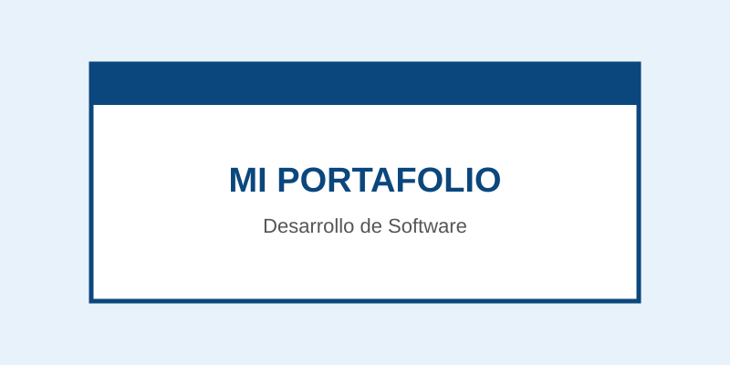

Propósito
Presentar mi información personal, académica y profesional mediante un currículum y portafolio web.
Mi nombre es Ángel Saúl Ortiz Aguilar. Actualmente estudio Ingeniería en Desarrollo de Software Multiplataforma en la Universidad Tecnológica de León y curso el cuarto cuatrimestre. Me interesa la programación y el desarrollo de software.
Presentar mi información personal, académica y profesional mediante un currículum y portafolio web.
Mostrar mi formación, habilidades y proyectos, además de practicar los conocimientos de HTML y CSS.
Profesores, compañeros, reclutadores y personas interesadas en conocer mi perfil y mis proyectos.
Universidad Tecnológica de León
Actualmente curso el cuarto cuatrimestre.
Actualmente estoy desarrollando experiencia mediante proyectos y actividades académicas. Aquí podré agregar mi experiencia laboral cuando la tenga.
Página web creada para practicar HTML5 y CSS.
Aquí agregaré nuevas evidencias y proyectos realizados durante mi carrera.
En esta sección se muestran distintos tipos de contenido multimedia.

UN VIDEO DE GATITOS
Una cancion recomendada